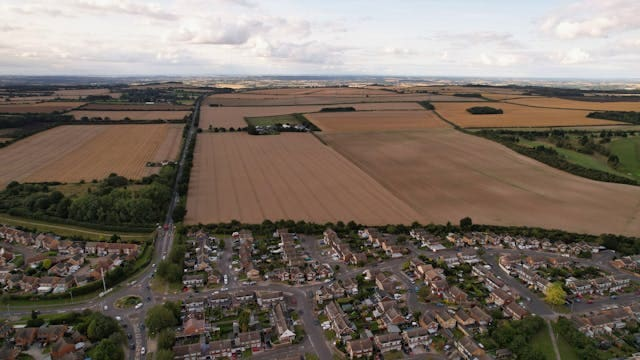

Utilizamos tecnología avanzada para definir los límites exactos de tu propiedad. Sin márgenes de error, solo datos reales.

Levantamientos de alta precisión mediante posicionamiento por promedio estadístico para certeza técnica y legal.
Ya sea para comprar, vender, construir o regularizar, conocer las medidas exactas de tu terreno es fundamental. Nuestro equipo técnico utiliza receptores GNSS y estaciones totales para entregar resultados confiables.
Generamos planos digitales con coordenadas UTM, curvas de nivel y detalles del terreno.
Tramitamos la subdivisión de tu predio ante el SAG y el Conservador, maximizando el valor de cada lote.
Vamos a terreno y marcamos físicamente (estacado) los límites reales de tu propiedad para cercar con seguridad.
Cotiza tu levantamiento topográfico hoy mismo. Entregamos planos digitales e impresos, listos para tus trámites legales.